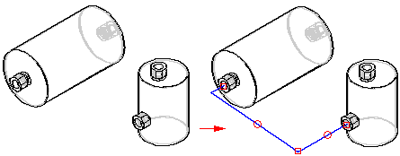
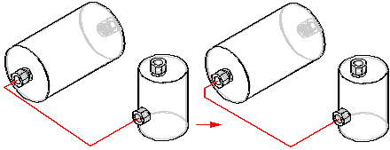
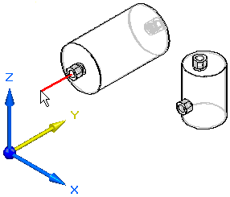
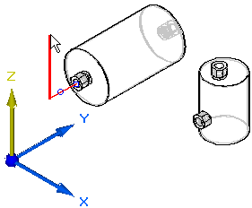
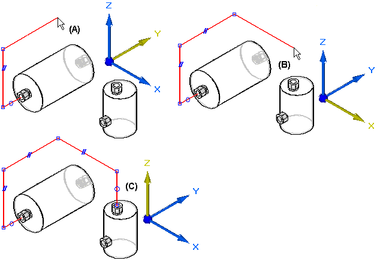
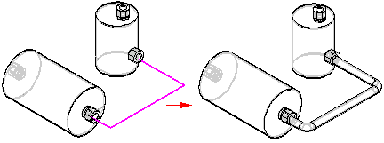

Creating path segments
Tubes and Pipes are created along a path segment. You can use the PathXpres command in XpresRoute to create the path without manually drawing the individual lines of the path or you can use the Line Segment command or Arc Segment command to manually draw the path.
In addition to drawing the path segment, you can use the sketch geometry of an assembly layout to define the path.
Creating the path with PathXpres
Use the PathXpres command to create a 3D path for a tube or pipe without having to manually draw the individual lines of the path. PathXpres generates a path between two points that is orthogonal to the default reference planes. These points must be circular or elliptical element, the endpoint of a segment, or the endpoint of a sketch element.

In cases where more than one way for the path exists, you can use the Next and Previous button on the PathXpres command bar to display alternative paths. The order of the paths goes from the simplest path, with the least number of segments, to the most complex path. The maximum number of segments in a path that PathXpres generates is five.

Drawing a Path Manually
You can use the Line Segment command , Arc Segment command , or Path command in XpresRoute to manually draw the path for the tube or pipe. You can connect arc segments to line segments or other arc segments.
OrientXpres
You use the OrientXpres tool to assist you in drawing lines and arcs in 3D space when drawing a path manually. As you draw the line or arc segments, use OrientXpres to lock the orientation of the element parallel to an axis or plane as you draw it. For example, after you define the start point for a line segment, you can use OrientXpres to lock the orientation to the y axis.

When you click to define the second point for the line, you can then use OrientXpres to lock the orientation to the z axis.

You can continue to lock the axis or plane to assist you in defining the path (A), (B), (C).

If you make an error when you draw a path segment, you can click the Undo button to undo the unwanted action. You can then continue drawing the path segment.
If you mistakenly undo the wrong action, you can click the Redo button to restore the action.
Creating paths with assembly layouts
In addition to drawing the path, you can use sketch geometry that exists in an assembly layout as input for the path segment.
